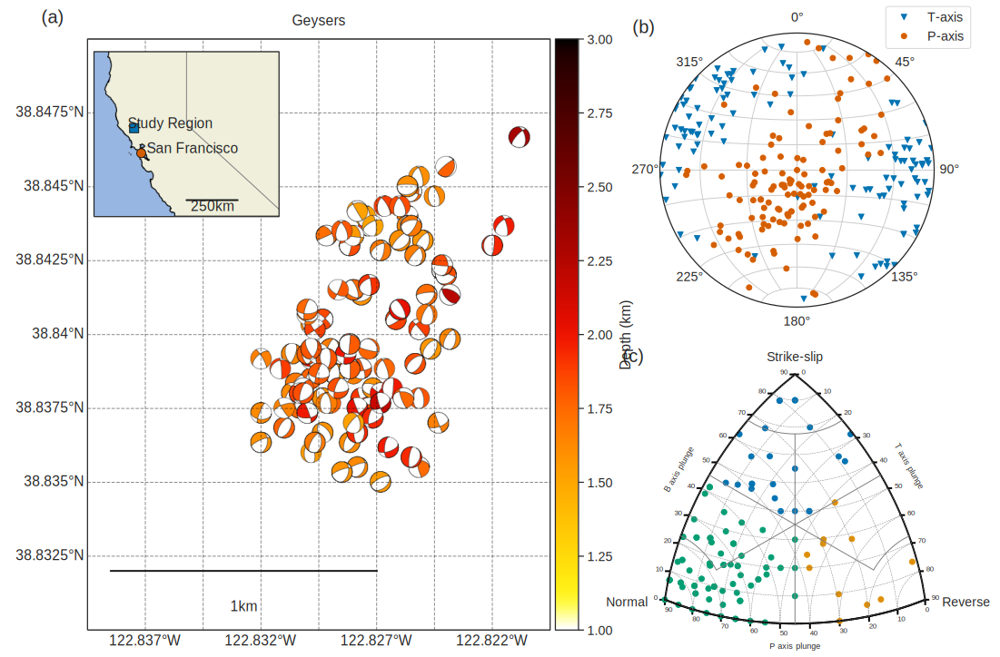
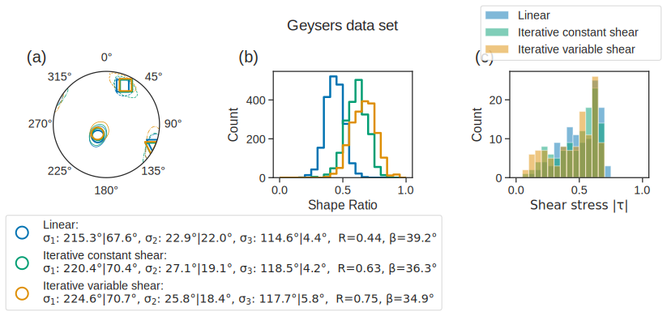
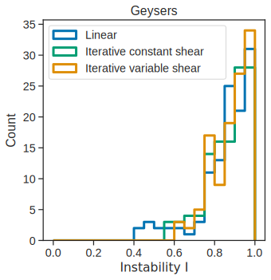

Stress inversion of the Geysers focal mechanisms from NCEDC
Cite the NCEDC: “NCEDC (2014), Northern California Earthquake Data Center. UC Berkeley Seismological Laboratory. Dataset. doi:10.7932/NCEDC.”
Acknowledge the NCEDC: “Waveform data, metadata, or data products for this study were accessed through the Northern California Earthquake Data Center (NCEDC), doi:10.7932/NCEDC.”
You may have to install mplstereonet https://github.com/joferkington/mplstereonet, and colorcet https://colorcet.holoviz.org/.
[3]:
import os
os.environ["OPENBLAS_NUM_THREADS"] = "1"
import sys
import numpy as np
import pandas as pd
import matplotlib.pyplot as plt
import string
import cartopy as ctp
import colorcet as cc
from obspy.imaging import beachball as obb
from matplotlib.colors import Normalize
from matplotlib.cm import ScalarMappable
from mpl_toolkits.axes_grid1 import make_axes_locatable
from mpl_toolkits.axes_grid1.inset_locator import inset_axes
from shapely import geometry
import mplstereonet as mpl
import ILSI
from time import time as give_time
# plot data in Kaverina diagram
sys.path.append(
os.path.join(
"/home/eric/Dropbox (MIT)/DANA/temporary_working_dir/focal_mechanisms/FMC/"
)
)
import plotFMC
import functionsFMC
from functionsFMC import kave, mecclass
# set plotting parameters
import seaborn as sns
sns.set(font_scale=1.3)
sns.set_style("ticks")
sns.set_palette("colorblind")
plt.rcParams["savefig.dpi"] = 200
plt.rcParams["svg.fonttype"] = "none"
# define the color palette
_colors_ = ["C0", "C2", "C1", "C4"]
[4]:
%config InlineBackend.figure_formats = ["svg"]
[5]:
# path variables
data_path = "../data"
dataset_fn = "Geysers_dataset.csv"
# load dataset
data = pd.read_csv(os.path.join(data_path, dataset_fn), sep="\t", index_col=0, header=0)
data["date"] = pd.to_datetime(data["date"], format="%Y-%m-%d")
data
[5]:
| date | hhmm | sec | event_id | mag | lat | lon | depth | strike | dip | rake | err_strike | err_dip | err_rake | |
|---|---|---|---|---|---|---|---|---|---|---|---|---|---|---|
| 1221 | 2010-12-03 | 1049 | 44.91 | 71046544.0 | 1.03 | 38.842833 | -122.827333 | 1.68 | 10.0 | 60 | -120.0 | 35 | 33 | 50 |
| 1223 | 2010-12-04 | 439 | 59.97 | 71492300.0 | 1.69 | 38.843000 | -122.822500 | 1.94 | 5.0 | 75 | -90.0 | 43 | 28 | 40 |
| 1228 | 2010-12-05 | 132 | 44.55 | 71492590.0 | 1.32 | 38.843000 | -122.828667 | 1.84 | 10.0 | 75 | -150.0 | 25 | 35 | 40 |
| 1229 | 2010-12-05 | 1420 | 35.92 | 71492810.0 | 1.13 | 38.840500 | -122.826667 | 1.87 | 55.0 | 70 | -90.0 | 40 | 25 | 40 |
| 1233 | 2010-12-05 | 2128 | 42.44 | 71492925.0 | 1.57 | 38.837833 | -122.829833 | 1.59 | 160.0 | 45 | -90.0 | 35 | 20 | 40 |
| ... | ... | ... | ... | ... | ... | ... | ... | ... | ... | ... | ... | ... | ... | ... |
| 1529 | 2011-03-28 | 732 | 18.81 | 71543515.0 | 1.26 | 38.839000 | -122.825833 | 1.83 | 35.0 | 45 | -100.0 | 25 | 15 | 25 |
| 1530 | 2011-03-29 | 251 | 11.14 | 71543905.0 | 1.38 | 38.838167 | -122.829167 | 1.83 | 90.0 | 55 | -30.0 | 10 | 28 | 30 |
| 1535 | 2011-03-31 | 949 | 8.72 | 71545125.0 | 1.01 | 38.840833 | -122.830500 | 1.75 | 70.0 | 30 | -70.0 | 50 | 23 | 30 |
| 1536 | 2011-03-31 | 949 | 8.72 | 71545125.0 | 1.01 | 38.840833 | -122.830500 | 1.75 | 195.0 | 70 | -140.0 | 25 | 10 | 20 |
| 1537 | 2011-03-31 | 1720 | 8.99 | 71545285.0 | 1.37 | 38.844333 | -122.826500 | 1.84 | 335.0 | 55 | -120.0 | 33 | 20 | 25 |
116 rows × 14 columns
Plot data set
[6]:
def add_scale_bar(ax, x_start, y_start, distance, source_crs, azimuth=90.0, **kwargs):
"""
Parameters
-----------
ax: GeoAxes instance
The axis on which we want to add a scale bar.
x_start: float
The x coordinate of the left end of the scale bar,
given in the axis coordinate system, i.e. from 0 to 1.
y_start: float
The y coordinate of the left end of the scale bar,
given in the axis coordinate system, i.e. from 0 to 1.
distance: float
The distance covered by the scale bar, in km.
source_crs: cartopy.crs
The coordinate system in which the data are written.
"""
from cartopy.geodesic import Geodesic
G = Geodesic()
# default values
kwargs["lw"] = kwargs.get("lw", 2)
kwargs["color"] = kwargs.get("color", "k")
data_coords = ctp.crs.PlateCarree()
# transform the axis coordinates into display coordinates
display = ax.transAxes.transform([x_start, y_start])
# take display coordinates into data coordinates
data = ax.transData.inverted().transform(display)
# take data coordinates into lon/lat
lon_start, lat_start = data_coords.transform_point(data[0], data[1], source_crs)
# get the coordinates of the end of the scale bar
lon_end, lat_end, _ = np.asarray(
G.direct([lon_start, lat_start], azimuth, 1000.0 * distance)
)[0]
if azimuth % 180.0 == 90.0:
lat_end = lat_start
elif azimuth % 180.0 == 0.0:
lon_end == lon_start
ax.plot([lon_start, lon_end], [lat_start, lat_end], transform=data_coords, **kwargs)
ax.text(
(lon_start + lon_end) / 2.0,
(lat_start + lat_end) / 2.0 - 0.001,
"{:.0f}km".format(distance),
transform=data_coords,
ha="center",
va="top",
)
return
def plot_Kaverina(strikes, dips, rakes, ax=None):
n_earthquakes = len(strikes)
# determine the t and p axes
P_axis = np.zeros((n_earthquakes, 2), dtype=np.float32)
T_axis = np.zeros((n_earthquakes, 2), dtype=np.float32)
B_axis = np.zeros((n_earthquakes, 2), dtype=np.float32)
faulting_type = np.zeros(n_earthquakes, dtype=np.int32)
fm_type = []
r2d = 180.0 / np.pi
for t in range(n_earthquakes):
# first, get normal and slip vectors from
# strike, dip, rake
normal, slip = ILSI.utils_stress.normal_slip_vectors(
strikes[t], dips[t], rakes[t]
)
# second, get the t and p vectors
p_axis, t_axis, b_axis = ILSI.utils_stress.p_t_b_axes(normal, slip)
p_bearing, p_plunge = ILSI.utils_stress.get_bearing_plunge(p_axis)
t_bearing, t_plunge = ILSI.utils_stress.get_bearing_plunge(t_axis)
b_bearing, b_plunge = ILSI.utils_stress.get_bearing_plunge(b_axis)
P_axis[t, :] = p_bearing, p_plunge
T_axis[t, :] = t_bearing, t_plunge
B_axis[t, :] = b_bearing, b_plunge
fm_type.append(mecclass(t_plunge, b_plunge, p_plunge))
# get the x, y coordinates for FMC's plots
x_kave, y_kave = kave(T_axis[:, 1], B_axis[:, 1], P_axis[:, 1])
colors_fm = {}
colors_fm["SS"] = "C0"
colors_fm["SS-N"] = "C0"
colors_fm["SS-R"] = "C0"
colors_fm["R"] = "C1"
colors_fm["R-SS"] = "C1"
colors_fm["N"] = "C2"
colors_fm["N-SS"] = "C2"
colors = np.asarray([colors_fm[fm] for fm in fm_type])
if ax is None:
fig = plt.figure("Kaverina_diagram", figsize=(12, 12))
ax = fig.add_subplot(111)
fig = plotFMC.baseplot(10, "", ax=ax)
ax.scatter(x_kave, y_kave, color=colors)
return fig
[7]:
# define region extent
lat_min_box, lat_max_box = 38.83, 38.85
lon_min_box, lon_max_box = -122.84, -122.82
# define inset extent
lat_min_inset, lat_max_inset = 35.00, 42.00
lon_min_inset, lon_max_inset = -125.00, -115.00
cNorm_box = Normalize(
vmin=np.floor(data["depth"].min()), vmax=np.ceil(data["depth"].max())
)
scalar_map_box = ScalarMappable(norm=cNorm_box, cmap=cc.cm.fire_r)
# define projections
data_coords = ctp.crs.PlateCarree()
projection = ctp.crs.Mercator(
central_longitude=(lon_min_box + lon_max_box) / 2.0,
min_latitude=lat_min_box,
max_latitude=lat_max_box,
)
projection_inset = ctp.crs.Mercator(
central_longitude=(lon_min_inset + lon_max_inset) / 2.0,
min_latitude=lat_min_inset,
max_latitude=lat_max_inset,
)
[8]:
# plot the focal mechanisms
fig_fm = plt.figure("earthquakes_Geysers", figsize=(15, 12))
gs = fig_fm.add_gridspec(2, 5)
ax_fm = fig_fm.add_subplot(gs[:, :3], projection=projection)
ax_fm.set_rasterization_zorder(1.5)
ax_fm.set_extent([lon_min_box, lon_max_box, lat_min_box, lat_max_box], crs=data_coords)
ax_fm.set_title("Geysers", pad=15)
# plot inset map
axins = inset_axes(
ax_fm,
width="40%",
height="30%",
loc="upper left",
axes_class=ctp.mpl.geoaxes.GeoAxes,
axes_kwargs=dict(map_projection=projection_inset),
)
axins.set_rasterization_zorder(1.5)
axins.set_extent(
[lon_min_inset, lon_max_inset, lat_min_inset, lat_max_inset], crs=data_coords
)
study_region = geometry.box(
minx=lon_min_box, maxx=lon_max_box, miny=lat_min_box, maxy=lat_max_box
)
axins.add_geometries([study_region], crs=data_coords, edgecolor="k", facecolor="C0")
axins.plot(
(lon_min_box + lon_max_box) / 2.0,
(lat_min_box + lat_max_box) / 2.0,
marker="s",
color="C0",
markersize=10,
markeredgecolor="k",
transform=data_coords,
)
axins.text(
(lon_min_box + lon_max_box) / 2.0 - 0.35,
(lat_min_box + lat_max_box) / 2.0,
"Study Region",
transform=data_coords,
)
# plot San Francisco
axins.plot(
-122.446355,
37.774386,
marker="o",
color="C3",
markersize=10,
markeredgecolor="k",
transform=data_coords,
)
axins.text(-122.15, 37.774386, "San Francisco", transform=data_coords)
for ax in [axins, ax_fm]:
ax.add_feature(
ctp.feature.NaturalEarthFeature(
"cultural",
"admin_1_states_provinces_lines",
"110m",
edgecolor="gray",
facecolor="none",
)
)
ax.add_feature(ctp.feature.BORDERS)
ax.add_feature(ctp.feature.GSHHSFeature(scale="full", levels=[1], zorder=0.49))
axins.add_feature(ctp.feature.LAND)
axins.add_feature(ctp.feature.OCEAN)
add_scale_bar(axins, 0.50, 0.10, 250.0, projection_inset)
# add meridians and latitudes
gl = ax_fm.gridlines(
draw_labels=True, linewidth=1, alpha=0.5, color="k", linestyle="--"
)
gl.right_labels = False
gl.left_labels = True
gl.top_labels = False
gl.bottom_labels = True
for i in range(len(data)):
# fetch focal mechanism
strike, dip, rake = (
data.iloc[i]["strike"],
data.iloc[i]["dip"],
data.iloc[i]["rake"],
)
# determine coordinates in the axis frame of reference
x, y = ax_fm.projection.transform_point(
data.iloc[i]["lon"], data.iloc[i]["lat"], data_coords
)
fc = scalar_map_box.to_rgba(data.iloc[i]["depth"])
# ---------------------------
# uncomment if you are not planning on saving svg figures:
# bb = obb.beach(
# [strike, dip, rake], xy=(x, y), width=20,
# facecolor=fc, linewidth=0.4, axes=ax_fm)
# ---------------------------
# uncomment if you are planning on making svg figures
bb = obb.beach(
[strike, dip, rake],
xy=(x, y),
width=100,
facecolor=fc,
linewidth=0.4,
zorder=1.4,
)
ax_fm.add_collection(bb)
# add colorbar
divider = make_axes_locatable(ax_fm)
cax = divider.append_axes("right", size="5%", pad=0.08, axes_class=plt.Axes)
plt.colorbar(scalar_map_box, cax=cax, label="Depth (km)", orientation="vertical")
# add scale bar
add_scale_bar(ax_fm, 0.05, 0.1, 1.0, projection)
# ---------------------------------------------------
# plot data points in P/T space
ax_pt = fig_fm.add_subplot(gs[0, 3:], projection="stereonet")
# fetch focal mechanisms
strikes, dips, rakes = data["strike"], data["dip"], data["rake"]
n, s = ILSI.utils_stress.normal_slip_vectors(strikes, dips, rakes)
# compute the bearing and plunge of each P/T vector
p_or = np.zeros((len(strikes), 2), dtype=np.float32)
t_or = np.zeros((len(strikes), 2), dtype=np.float32)
for i in range(len(strikes)):
p, t, b = ILSI.utils_stress.p_t_b_axes(n[:, i], s[:, i])
p_or[i, :] = ILSI.utils_stress.get_bearing_plunge(p)
t_or[i, :] = ILSI.utils_stress.get_bearing_plunge(t)
ax_pt.line(t_or[:, 1], t_or[:, 0], marker="v", color="C0")
ax_pt.line(p_or[:, 1], p_or[:, 0], marker="o", color="C3")
ax_pt.line(t_or[0, 1], t_or[0, 0], marker="v", color="C0", label="T-axis")
ax_pt.line(p_or[0, 1], p_or[0, 0], marker="o", color="C3", label="P-axis")
ax_pt.grid(True)
ax_pt.legend(loc="lower left", bbox_to_anchor=(0.80, 0.92))
# ---------------------------------------------------
# plot data points in Kaverina diagram
ax_Kav = fig_fm.add_subplot(gs[1, 3:])
fig_fm = plot_Kaverina(strikes.values, dips.values, rakes.values, ax=ax_Kav)
for i, ax in enumerate([ax_fm, ax_pt, ax_Kav]):
ax.text(
-0.1,
1.05,
f"({string.ascii_lowercase[i]})",
va="top",
fontsize=20,
ha="left",
transform=ax.transAxes,
)
plt.subplots_adjust(wspace=0.55, left=0.1, right=0.98)
ax_pt._polar.set_position(ax_pt.get_position())
/home/eric/miniconda3/envs/py310/lib/python3.10/site-packages/cartopy/mpl/geoaxes.py:406: UserWarning: The `map_projection` keyword argument is deprecated, use `projection` to instantiate a GeoAxes instead.
warnings.warn("The `map_projection` keyword argument is "

[9]:
fig_fm.savefig(f'{fig_fm._label}.svg', format='svg', bbox_inches='tight')
Stress tensor inversion
[10]:
# --------------------------------
# prepare data
# --------------------------------
strikes, dips, rakes = data["strike"], data["dip"], data["rake"]
strikes_1, dips_1, rakes_1 = strikes.values, dips.values, rakes.values
rakes_1 = np.float32(rakes_1) % 360.0
n_earthquakes = len(strikes_1)
strikes_2, dips_2, rakes_2 = np.asarray(
list(map(ILSI.utils_stress.aux_plane, strikes_1, dips_1, rakes_1))
).T
[11]:
# --------------------------------
# inversion parameters
# --------------------------------
# if you want to search for the "best" friction coefficient, set friction_coefficient to None
friction_min = 0.1
friction_max = 1.2
friction_step = 0.05
# if you want to fix the friction coefficient to some value, set friction_coefficient equal to that value
# (the paper uses a fixed friction_coefficient = 0.6)
friction_coefficient = 0.6
n_random_selections = 30
n_stress_iter = 10
n_resamplings = 2000
n_averaging = 3
# parallelization option: use n_threads="all" if you want to use all your CPUs to speed up the computation
# use n_threads=X with X any integer number to use a specific number of CPUs
n_threads = "all"
ILSI_kwargs = {}
ILSI_kwargs["max_n_iterations"] = 300
ILSI_kwargs["shear_update_atol"] = 1.0e-5
Tarantola_kwargs = {}
[12]:
# --------------------------------
# initialize output dictionary
# --------------------------------
inversion_output = {}
methods = ["linear", "iterative_constant_shear", "iterative_variable_shear"]
for method in methods:
inversion_output[method] = {}
[13]:
# --------------------------------
# invert the whole dataset
# --------------------------------
print(f"Linear inversion...")
# simple, linear inversion
inversion_output["linear"] = ILSI.ilsi.inversion_one_set(
strikes_1,
dips_1,
rakes_1,
n_random_selections=n_random_selections,
**ILSI_kwargs,
Tarantola_kwargs=Tarantola_kwargs,
variable_shear=False,
)
print(f"Iterative constant shear inversion...")
inversion_output["iterative_constant_shear"] = ILSI.ilsi.inversion_one_set_instability(
strikes_1,
dips_1,
rakes_1,
n_random_selections=n_random_selections,
**ILSI_kwargs,
Tarantola_kwargs=Tarantola_kwargs,
friction_min=friction_min,
friction_max=friction_max,
friction_step=friction_step,
friction_coefficient=friction_coefficient,
n_stress_iter=n_stress_iter,
n_averaging=n_averaging,
variable_shear=False,
signed_instability=False,
)
if friction_coefficient is None:
print(
f'Inverted friction: {inversion_output["iterative_constant_shear"]["friction_coefficient"]:.2f}'
)
print(f"Iterative variable shear inversion...")
inversion_output["iterative_variable_shear"] = ILSI.ilsi.inversion_one_set_instability(
strikes_1,
dips_1,
rakes_1,
n_random_selections=n_random_selections,
**ILSI_kwargs,
Tarantola_kwargs=Tarantola_kwargs,
friction_min=friction_min,
friction_max=friction_max,
friction_step=friction_step,
friction_coefficient=friction_coefficient,
n_stress_iter=n_stress_iter,
n_averaging=n_averaging,
variable_shear=True,
signed_instability=False,
plot=False,
)
if friction_coefficient is None:
print(
f'Inverted friction: {inversion_output["iterative_variable_shear"]["friction"]:.2f}'
)
for method in methods:
R = ILSI.utils_stress.R_(inversion_output[method]["principal_stresses"])
I, fp_strikes, fp_dips, fp_rakes = ILSI.ilsi.compute_instability_parameter(
inversion_output[method]["principal_directions"],
R,
inversion_output[method]["friction_coefficient"] if "friction_coefficient" in inversion_output[method] else 0.6,
strikes_1,
dips_1,
rakes_1,
strikes_2,
dips_2,
rakes_2,
return_fault_planes=True,
)
inversion_output[method]["misfit"] = np.mean(
ILSI.utils_stress.mean_angular_residual(
inversion_output[method]["stress_tensor"], fp_strikes, fp_dips, fp_rakes
)
)
Linear inversion...
Iterative constant shear inversion...
-------- 1/3 ----------
Initial shape ratio: 0.43
-------- 2/3 ----------
Initial shape ratio: 0.44
-------- 3/3 ----------
Initial shape ratio: 0.43
Final results:
Stress tensor:
[[ 0.18210721 0.26362798 -0.19520067]
[ 0.26362798 0.47622395 0.21382438]
[-0.19520067 0.21382438 -0.65833116]]
Shape ratio: 0.63
Iterative variable shear inversion...
-------- 1/3 ----------
Initial shape ratio: 0.46
-------- 2/3 ----------
Initial shape ratio: 0.47
-------- 3/3 ----------
Initial shape ratio: 0.46
Final results:
Stress tensor:
[[ 0.24370153 0.19287305 -0.21143867]
[ 0.19287305 0.43422613 0.25363243]
[-0.21143867 0.25363243 -0.6779277 ]]
Shape ratio: 0.75
[14]:
# --------------------------------
# bootstrap the dataset to infer uncertainties
# --------------------------------
print(f"Linear inversion (bootstrapping)...")
t1 = give_time()
# simple, linear inversion
bootstrap = ILSI.ilsi.inversion_bootstrap(
strikes_1,
dips_1,
rakes_1,
n_resamplings=n_resamplings,
Tarantola_kwargs=Tarantola_kwargs,
variable_shear=False,
)
for field in bootstrap:
inversion_output["linear"][field] = bootstrap[field]
t2 = give_time()
print(f"Done in {t2-t1:.2f}sec!")
t1 = give_time()
print(f"Iterative constant shear inversion (bootstrapping)...")
bootstrap = ILSI.ilsi.inversion_bootstrap_instability(
inversion_output["iterative_constant_shear"]["principal_directions"],
ILSI.utils_stress.R_(
inversion_output["iterative_constant_shear"]["principal_stresses"]
),
strikes_1,
dips_1,
rakes_1,
inversion_output["iterative_constant_shear"]["friction_coefficient"],
**ILSI_kwargs,
Tarantola_kwargs=Tarantola_kwargs,
n_stress_iter=n_stress_iter,
n_resamplings=n_resamplings,
n_threads=n_threads,
variable_shear=False,
signed_instability=False,
)
for field in bootstrap:
inversion_output["iterative_constant_shear"][field] = bootstrap[field]
t2 = give_time()
print(f"Done in {t2-t1:.2f}sec!")
t1 = give_time()
print(f"Iterative variable shear inversion (bootstrapping)...")
bootstrap = ILSI.ilsi.inversion_bootstrap_instability(
inversion_output["iterative_variable_shear"]["principal_directions"],
ILSI.utils_stress.R_(
inversion_output["iterative_variable_shear"]["principal_stresses"]
),
strikes_1,
dips_1,
rakes_1,
inversion_output["iterative_variable_shear"]["friction_coefficient"],
**ILSI_kwargs,
Tarantola_kwargs=Tarantola_kwargs,
n_stress_iter=n_stress_iter,
n_resamplings=n_resamplings,
n_threads=n_threads,
variable_shear=True,
signed_instability=False,
)
for field in bootstrap:
inversion_output["iterative_variable_shear"][field] = bootstrap[field]
t2 = give_time()
print(f"Done in {t2-t1:.2f}sec!")
Linear inversion (bootstrapping)...
---------- Bootstrapping 1/2000 ----------
---------- Bootstrapping 101/2000 ----------
---------- Bootstrapping 201/2000 ----------
---------- Bootstrapping 301/2000 ----------
---------- Bootstrapping 401/2000 ----------
---------- Bootstrapping 501/2000 ----------
---------- Bootstrapping 601/2000 ----------
---------- Bootstrapping 701/2000 ----------
---------- Bootstrapping 801/2000 ----------
---------- Bootstrapping 901/2000 ----------
---------- Bootstrapping 1001/2000 ----------
---------- Bootstrapping 1101/2000 ----------
---------- Bootstrapping 1201/2000 ----------
---------- Bootstrapping 1301/2000 ----------
---------- Bootstrapping 1401/2000 ----------
---------- Bootstrapping 1501/2000 ----------
---------- Bootstrapping 1601/2000 ----------
---------- Bootstrapping 1701/2000 ----------
---------- Bootstrapping 1801/2000 ----------
---------- Bootstrapping 1901/2000 ----------
Done in 50.56sec!
Iterative constant shear inversion (bootstrapping)...
Done in 91.70sec!
Iterative variable shear inversion (bootstrapping)...
Done in 107.29sec!
[15]:
inversion_output["strikes"] = np.stack((strikes_1, strikes_2), axis=1)
inversion_output["dips"] = np.stack((dips_1, dips_2), axis=1)
inversion_output["rakes"] = np.stack((rakes_1, rakes_2), axis=1)
[16]:
def plot_inverted_stress_tensors(inversion_output, axes=None, figtitle="", **kwargs):
hist_kwargs = {}
hist_kwargs["smoothing_sig"] = kwargs.get("smoothing_sig", 1)
hist_kwargs["nbins"] = kwargs.get("nbins", 200)
hist_kwargs["return_count"] = kwargs.get("return_count", True)
hist_kwargs["confidence_intervals"] = kwargs.get("confidence_intervals", [95.0])
markers = ["o", "s", "v"]
methods = ["linear", "iterative_constant_shear", "iterative_variable_shear"]
n_resamplings = inversion_output["linear"]["boot_principal_directions"].shape[0]
fig = plt.figure("inverted_stress_tensors_Geysers", figsize=(15, 9))
fig.suptitle(figtitle)
gs = fig.add_gridspec(
nrows=3,
ncols=3,
top=0.88,
bottom=0.11,
left=0.15,
right=0.85,
hspace=0.4,
wspace=0.7,
)
axes = []
ax1 = fig.add_subplot(gs[0, 0], projection="stereonet")
ax2 = fig.add_subplot(gs[0, 1])
ax3 = fig.add_subplot(gs[0, 2])
# for j, method in enumerate(methods):
for j in [0, 1, 2]:
method = methods[j]
R = ILSI.utils_stress.R_(inversion_output[method]["principal_stresses"])
for k in range(3):
if k == 0:
label = "{}:\n".format(method.replace("_", " ").capitalize())
for k2 in range(3):
az, pl = ILSI.utils_stress.get_bearing_plunge(
inversion_output[method]["principal_directions"][:, k2]
)
label += (
r"$\sigma_{{{:d}}}$: {:.1f}"
"\u00b0"
"|{:.1f}"
"\u00b0"
", ".format(k2 + 1, az, pl)
)
label += " R={:.2f}, $\\beta$={:.1f}" "\u00b0".format(
R, inversion_output[method]["misfit"]
)
else:
label = ""
az, pl = ILSI.utils_stress.get_bearing_plunge(
inversion_output[method]["principal_directions"][:, k]
)
ax1.line(
pl,
az,
marker=markers[k],
markeredgecolor=_colors_[j],
markeredgewidth=2,
markerfacecolor="none",
markersize=[15, 15, 15, 15][j],
label=label,
zorder=2,
)
boot_pd_stereo = np.zeros((n_resamplings, 2), dtype=np.float32)
for b in range(n_resamplings):
boot_pd_stereo[b, :] = ILSI.utils_stress.get_bearing_plunge(
inversion_output[method]["boot_principal_directions"][b, :, k]
)
count, lons_g, lats_g, levels = ILSI.utils_stress.get_CI_levels(
boot_pd_stereo[:, 0], boot_pd_stereo[:, 1], **hist_kwargs
)
ax1.contour(
lons_g,
lats_g,
count,
levels=levels,
vmin=0.0,
linestyles=["solid", "dashed", "dashdot"][k],
linewidths=0.75,
colors=_colors_[j],
zorder=1.1,
)
axes.append(ax1)
Rs = np.zeros(n_resamplings, dtype=np.float32)
for b in range(n_resamplings):
Rs[b] = ILSI.utils_stress.R_(
inversion_output[method]["boot_principal_stresses"][b, :]
)
ax2.hist(
Rs, range=(0.0, 1.0), bins=20, lw=2.5, color=_colors_[j], histtype="step"
)
ax2.set_xlabel("Shape Ratio")
ax2.set_ylabel("Count")
# plot stress magnitudes
# for i, method in enumerate(methods):
for i in [0, 1, 2]:
method = methods[i]
pd = inversion_output[method]["principal_directions"]
R = ILSI.utils_stress.R_(inversion_output[method]["principal_stresses"])
I, fp_strikes, fp_dips, fp_rakes = ILSI.ilsi.compute_instability_parameter(
pd,
R,
inversion_output[method]["friction_coefficient"] if "friction_coefficient" in inversion_output[method] else 0.6,
strikes_1,
dips_1,
rakes_1,
strikes_2,
dips_2,
rakes_2,
return_fault_planes=True,
)
normals, slips = ILSI.utils_stress.normal_slip_vectors(
fp_strikes, fp_dips, fp_rakes
)
_, _, shear = ILSI.utils_stress.compute_traction(
inversion_output[method]["stress_tensor"], normals.T
)
Ts_mag = np.sqrt(np.sum(shear**2, axis=-1))
sig_Ts = np.std(Ts_mag)
ax3.hist(
Ts_mag,
range=(0.0, 1.0),
bins=20,
color=_colors_[i],
alpha=0.5,
label=method.replace("_", " ").capitalize(),
)
ax3.set_ylabel("Count")
ax3.set_xlabel("Shear stress $\\vert \\tau \\vert$")
ax3.legend(bbox_to_anchor=(-0.25, 1.05), loc="lower left")
ax1.legend(loc="upper left", bbox_to_anchor=(-0.5, -0.30))
for i, ax in enumerate([ax1, ax2, ax3]):
ax.text(
-0.25,
1.2,
f"({string.ascii_lowercase[i]})",
va="top",
fontsize=20,
ha="left",
transform=ax.transAxes,
)
plt.subplots_adjust(
top=0.88, bottom=0.11, left=0.05, right=0.95, hspace=0.4, wspace=0.4
)
ax1._polar.set_position(ax1.get_position())
return fig
[17]:
# plot results
kwargs = {}
kwargs["smoothing_sig"] = 5 # control the smoothness of the confidence intervals
kwargs["confidence_intervals"] = [95.0]
fig_SI = plot_inverted_stress_tensors(
inversion_output, figtitle="Geysers data set", **kwargs
)

[18]:
# save the figures
for fig in [fig_SI]:
fig.savefig(f'{fig._label}.png', format='png', bbox_inches='tight')
fig.savefig(f'{fig._label}.svg', format='svg', bbox_inches='tight')
[19]:
def print_CI(inversion_output, CI_level=95.0, **kwargs):
hist_kwargs = {}
hist_kwargs["smoothing_sig"] = kwargs.get("smoothing_sig", 1)
hist_kwargs["nbins"] = kwargs.get("nbins", 200)
hist_kwargs["return_count"] = kwargs.get("return_count", True)
hist_kwargs["confidence_intervals"] = [CI_level]
methods = ["linear", "iterative_constant_shear", "iterative_variable_shear"]
n_resamplings = inversion_output["linear"]["boot_principal_directions"].shape[0]
for j in [0, 1, 2]:
method = methods[j]
print(f"---------- {method} ---------")
R = ILSI.utils_stress.R_(inversion_output[method]["principal_stresses"])
Rs = np.zeros(n_resamplings, dtype=np.float32)
for b in range(n_resamplings):
Rs[b] = ILSI.utils_stress.R_(
inversion_output[method]["boot_principal_stresses"][b, :]
)
R_minus = np.percentile(Rs, (100.0 - CI_level) / 2.0)
R_plus = np.percentile(Rs, CI_level + (100.0 - CI_level) / 2.0)
print(
f"\tShape ratio R = {R:.2f}, CI {CI_level:.0f} = ({R_minus:.2f}, {R_plus:.2f})"
)
for k in range(3):
az, pl = ILSI.utils_stress.get_bearing_plunge(
inversion_output[method]["principal_directions"][:, k]
)
boot_pd_stereo = np.zeros((n_resamplings, 2), dtype=np.float32)
for b in range(n_resamplings):
boot_pd_stereo[b, :] = ILSI.utils_stress.get_bearing_plunge(
inversion_output[method]["boot_principal_directions"][b, :, k]
)
count, lons_g, lats_g, levels = ILSI.utils_stress.get_CI_levels(
boot_pd_stereo[:, 0], boot_pd_stereo[:, 1], **hist_kwargs
)
plunges, bearings = mpl.geographic2plunge_bearing(lons_g, lats_g)
CR = np.where(count.flatten() >= levels[0])[0]
CR_plunges = plunges.flatten()[CR]
CR_bearings = bearings.flatten()[CR]
# correct for possible "spread" of the CI at the other
# end of the line (+/- 180deg) for low plunges
CR_bearings[CR_plunges < 15.0] = CR_bearings[CR_plunges < 15.0] % 180.0
if az > 180.0:
CR_bearings[CR_plunges < 15.0] += 180.0
print(f"\tPrincipal stress sigma {k+1}:")
print(
f"\t\tPlunge = {pl:.2f}"
"\u00b0"
f", CI {CI_level:.0f} = ({CR_plunges.min():.2f}"
"\u00b0"
f", {CR_plunges.max():.2f}"
"\u00b0"
f")"
)
print(
f"\t\tBearing = {az:.2f}"
"\u00b0"
f", CI {CI_level:.0f} = ({CR_bearings.min():.2f}"
"\u00b0"
f", {CR_bearings.max():.2f}"
"\u00b0"
f")"
)
print(
f"\t\t({az:.1f}"
"\u00b0"
f", {pl:.1f}"
"\u00b0"
f") ({CR_bearings.min():.1f}"
"\u00b0"
f"-{CR_bearings.max():.1f}"
"\u00b0"
f", {CR_plunges.min():.1f}"
"\u00b0"
f"-{CR_plunges.max():.1f}"
"\u00b0"
f")"
)
[20]:
kwargs = {}
kwargs["smoothing_sig"] = 5 # control the smoothness of the confidence intervals
kwargs["confidence_intervals"] = [95.0]
print_CI(inversion_output, **kwargs)
---------- linear ---------
Shape ratio R = 0.44, CI 95 = (0.30, 0.57)
Principal stress sigma 1:
Plunge = 67.56°, CI 95 = (50.90°, 83.61°)
Bearing = 215.32°, CI 95 = (181.50°, 257.14°)
(215.3°, 67.6°) (181.5°-257.1°, 50.9°-83.6°)
Principal stress sigma 2:
Plunge = 21.97°, CI 95 = (8.73°, 38.87°)
Bearing = 22.87°, CI 95 = (11.05°, 38.37°)
(22.9°, 22.0°) (11.0°-38.4°, 8.7°-38.9°)
Principal stress sigma 3:
Plunge = 4.38°, CI 95 = (0.35°, 16.43°)
Bearing = 114.64°, CI 95 = (101.25°, 129.25°)
(114.6°, 4.4°) (101.3°-129.3°, 0.3°-16.4°)
---------- iterative_constant_shear ---------
Shape ratio R = 0.63, CI 95 = (0.43, 0.76)
Principal stress sigma 1:
Plunge = 70.39°, CI 95 = (52.94°, 85.55°)
Bearing = 220.35°, CI 95 = (177.74°, 268.01°)
(220.4°, 70.4°) (177.7°-268.0°, 52.9°-85.5°)
Principal stress sigma 2:
Plunge = 19.13°, CI 95 = (5.93°, 36.53°)
Bearing = 27.07°, CI 95 = (10.39°, 47.11°)
(27.1°, 19.1°) (10.4°-47.1°, 5.9°-36.5°)
Principal stress sigma 3:
Plunge = 4.18°, CI 95 = (0.32°, 17.47°)
Bearing = 118.52°, CI 95 = (100.39°, 135.47°)
(118.5°, 4.2°) (100.4°-135.5°, 0.3°-17.5°)
---------- iterative_variable_shear ---------
Shape ratio R = 0.75, CI 95 = (0.48, 0.84)
Principal stress sigma 1:
Plunge = 70.69°, CI 95 = (57.88°, 89.36°)
Bearing = 224.56°, CI 95 = (135.00°, 341.57°)
(224.6°, 70.7°) (135.0°-341.6°, 57.9°-89.4°)
Principal stress sigma 2:
Plunge = 18.35°, CI 95 = (2.13°, 30.91°)
Bearing = 25.78°, CI 95 = (3.80°, 40.25°)
(25.8°, 18.4°) (3.8°-40.2°, 2.1°-30.9°)
Principal stress sigma 3:
Plunge = 5.80°, CI 95 = (0.35°, 20.79°)
Bearing = 117.72°, CI 95 = (93.17°, 129.30°)
(117.7°, 5.8°) (93.2°-129.3°, 0.3°-20.8°)
Some extra figures
[21]:
def plot_Mohr(inversion, plot_density=False):
import synthetic_dataset as syndata
strikes = inversion["strikes"]
dips = inversion["dips"]
rakes = inversion["rakes"]
fig, axes = plt.subplots(
num=f"Mohr_space_Geysers", figsize=(15, 5), nrows=1, ncols=3
)
fig.suptitle(f"The Geysers geothermal field")
for i, method in enumerate(
["linear", "iterative_constant_shear", "iterative_variable_shear"]
):
axes[i].set_title(method.replace("_", " ").capitalize())
st = inversion[method]["stress_tensor"]
p_sig, p_dir = ILSI.utils_stress.stress_tensor_eigendecomposition(st)
I, s, d, r = ILSI.ilsi.compute_instability_parameter(
p_dir,
ILSI.utils_stress.R_(p_sig),
0.6,
strikes[:, 0],
dips[:, 0],
rakes[:, 0],
strikes[:, 1],
dips[:, 1],
rakes[:, 1],
return_fault_planes=True,
)
fig = syndata.plot_dataset_Mohr(st, s, d, plot_density=plot_density, ax=axes[i])
fig = syndata.plot_dataset_Mohr(st, s, d, plot_density=plot_density, ax=axes[i])
fig = syndata.plot_dataset_Mohr(st, s, d, plot_density=plot_density, ax=axes[i])
for i, ax in enumerate(axes.flatten()):
ax.text(
-0.1,
1.05,
f"({string.ascii_lowercase[i]})",
transform=ax.transAxes,
size=20,
)
fig.tight_layout()
return fig
[22]:
fig_Mohr = plot_Mohr(inversion_output, plot_density=True)

[23]:
def plot_instabilities(inversion, mu=0.60, Imin=0.80):
strikes = inversion["strikes"]
dips = inversion["dips"]
rakes = inversion["rakes"]
fig, ax = plt.subplots(num="instabilities", figsize=(5, 5), nrows=1, ncols=1)
for i, method in enumerate(
["linear", "iterative_constant_shear", "iterative_variable_shear"]
):
stress_tensor = inversion[method]["stress_tensor"]
p_sig, p_dir = ILSI.utils_stress.stress_tensor_eigendecomposition(stress_tensor)
I, s, d, r = ILSI.ilsi.compute_instability_parameter(
p_dir,
ILSI.utils_stress.R_(p_sig),
mu,
strikes[:, 0],
dips[:, 0],
rakes[:, 0],
strikes[:, 1],
dips[:, 1],
rakes[:, 1],
return_fault_planes=True,
)
ax.hist(
np.max(I, axis=-1),
bins=20,
range=(Imin, 1.0),
color=_colors_[i],
label=method.replace("_", " ").capitalize(),
alpha=1,
histtype="step",
linewidth=3.0,
)
ax.set_xlabel(r"Instability $I$")
ax.set_ylabel("Count")
ax.legend(loc="upper left")
return fig
[24]:
fig_inst = plot_instabilities(inversion_output, Imin = 0.)
ax = fig_inst.get_axes()[0]
ax.set_title('Geysers')
fig_inst.savefig(fig_inst._label+'_Geysers.svg', format='svg', bbox_inches='tight')
